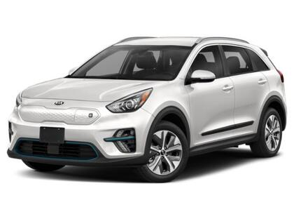
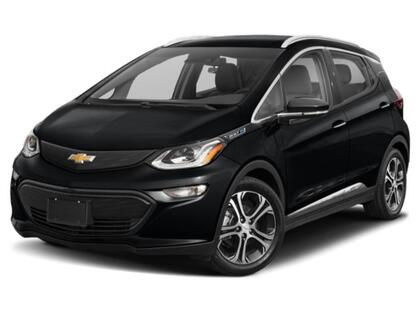
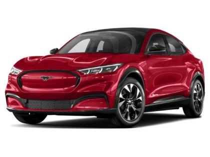
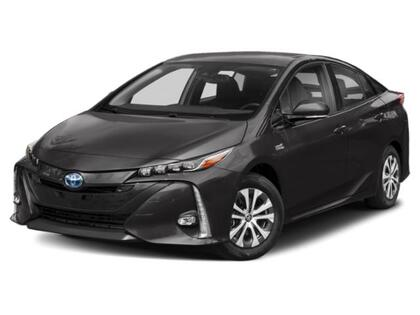
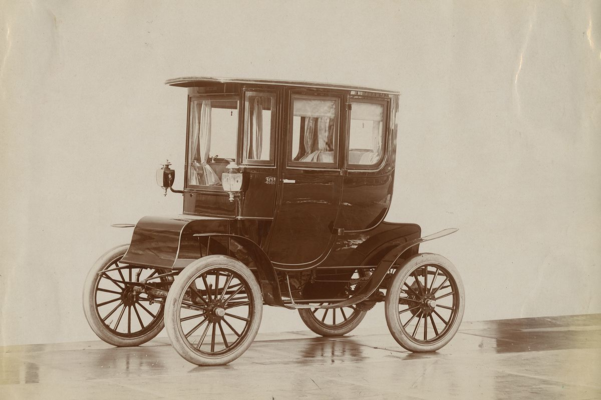
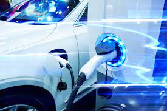

Goal 7: Affordable and Clean Energy
Goal 11: Sustainable Cities and Communities
Modern Electric Cars

KIA Niro EV

Chevrolet Bolt EV

Mustang Mach-E

Toyota Prius Prime
The History of Electric Cars

Did you know that electric cars and vehicles date back to when cars were originally invented in the 1800s? However, electric vehicles lost popularity throughout the 20th century which is why they are viewed today as a more contemporary phenomenon!
Electric Cars and the SDGs

UN Sustainable Development Goals 7 and 11 call for sustainable cities and communities and affordable and clean energy. Electric cars provide sustainable and green transportation for people living within cities and communities using clean energy... aligning them perfectly with these goals!